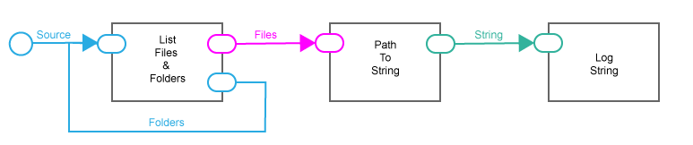

Tensorflow Introduction
By Matt Klawonn
klawom@rpi.edu
Outline
- Tensorflow Overview
- Data Ingestion
- Network Creation
- Training, Testing, Troubleshooting
- CNNs
- RNNs
- List of Resources
Overview
- Tensorflow Overview
- Data Ingestion
- Network Creation
- Training, Testing, Troubleshooting
- CNNs
- RNNs
- List of Resources
What is Tensorflow?
"TensorFlow is an open source software library for numerical computation using data flow graphs." In the context of deep models, it allows you to define networks and then train them via an automatic differentiation algorithm.
Tensorflow Paradigm
Tensorflow programming is similar to flow-based programming. You define a complete flow of operations and data first, and execute second.
The Computational Graph
When writing Tensorflow code, you are constructing a dataflow graph and executing it. "Nodes represent units of computation, and edges represent the data consumed or produced by a computation."

Components of Tensorflow Code
- Data Ingestion
- Trainable Parameters (network weights)
- Graph Operations (network structure)
- Session Operations (training, testing)
Consequences of the Graph
- The flow of operations is specified ahead of execution
- There is limited support for control flow operations (if, then, etc)
- It is expensive to switch back and forth between tensorflow and python
- USE TENSORFLOW FUNCTIONS WHENEVER POSSIBLE!
Overview
- Tensorflow Overview
- Data Ingestion
- Network Creation
- Training, Testing, Troubleshooting
- CNNs
- RNNs
- List of Resources
Data Ingestion
Main Data Ingestion Methods
The goal of all of the following methods is to make training data available to your model.
- Feed Dictionaries
- tf.data
- Queues (Deprecated)
Feed Dictionary Motivation
Tensorflow requires that operations are specified ahead of time. This requires that the input data be somehow available to the graph at graph construction, though graph operations must be declared before they are run. The placeholder coupled with a feed dictionary allow the graph access to data before the data is actually loaded.
Feed Dictionary Example
#The placeholder only specifies what the data will look like, i.e
#shape rather than providing specific values
#When you have an input batch of variable size, setting the batch
#dimension to None allows you to still use placeholders
input = tf.placeholder(tf.float32, shape=[None, 784])
target = tf.placeholder(tf.float32, shape=[None, 10])
#Make sure the sizes of trainable parameters are compatible with the
#sizes specified by the placeholders
weight_1 = tf.get_variable("weight_1", [input_size, output_size],\
initializer = xavier_initializer)
Feed Dictionary Example
#Specify Operations
#The placeholders can be used at any point in defining the
#operations depending on their intended use.
h1 = tf.matmul(input, weight_1)
cost = target - h1
train_operation = optimizer.minimize(cost)
#Code running ops in a session
with tf.Session() as sess:
#This will inialize all trainable parameters
sess.run(tf.global_variables_initializer())
#Supply actual values that will fill in the placeholder.
sess.run(train_operation, \
feed_dict = {input : some_vector, target : target_vector})
tf.data Motivation
Feed dictionaries by themselves are slow. Further, they do not provide abstractions for handling complex input pipelines via TF functions (e.g preprocessing).
tf.data Structures
- Dataset: The heart of the API
- Elements: Single training examples
- Components: Parts of a training example
tf.data Structures
#Pseudo Code
#Components
img1
[1,0,0]
#Element, a training example
(img1, [1,0,0])
#Dataset, the set of training examples
dataset_1 = [ (img1, [1,0,0]),
(img2, [0,1,0]),
(img3, [1,0,0]),
(img4, [0,0,1]),
(img5, [0,1,0])
]
Creating a tf.data.Dataset
- Create a source
- Apply transformations (optional)
- Iterate with tf.data.Iterator
Sourcing a Dataset
Datasets can be sourced from Tensorflow tensors, Numpy arrays, files on disk, and more.
#Here's an example of sourcing from numpy
#Only works for small datasets (low hundreds in MB)
features = np.ones((number_of_examples, 28, 28, 1))
labels = np.zeros((number_of_examples, number_of_classes))
dataset = tf.data.Dataset.from_tensor_slices((features, labels))
Sourcing with Placeholders
Here's an example using placeholders.
features = np.ones((number_of_examples, 28, 28, 1))
labels = np.zeros((number_of_examples, number_of_classes))
features_placeholder = tf.placeholder(features.dtype, features.shape)
labels_placeholder = tf.placeholder(labels.dtype, labels.shape)
dataset = tf.data.Dataset.from_tensor_slices((features_placeholder, \
labels_placeholder))
#When you run something that needs the dataset, use the placeholders
sess.run( ... , feed_dict={features_placeholder: features,
labels_placeholder: labels})
Sourcing from Files
And one from files.
filenames = tf.placeholder(tf.string, shape=[None])
dataset = tf.data.TFRecordDataset(filenames)
dataset = dataset.map(...) # Parse the record into tensors.
dataset = dataset.repeat() # Repeat the input indefinitely.
dataset = dataset.batch(32)
iterator = dataset.make_initializable_iterator()
# You can feed the initializer with the appropriate filenames for
# the current phase of execution, e.g. training vs. validation.
# Initialize `iterator` with training data.
training_filenames = ["/var/data/file1.tfrecord", \
"/var/data/file2.tfrecord"]
sess.run(iterator.initializer, \
feed_dict={filenames: training_filenames})
Sourcing from Files
# Initialize `iterator` with validation data.
validation_filenames = ["/var/data/validation1.tfrecord", ...]
sess.run(iterator.initializer, \
feed_dict={filenames: validation_filenames})
Applying Transformations
In the previous example we made use of dataset.map(), which produces a new dataset by applying a function to each element of the input dataset.
Applying Transformations
Common tasks to perform with dataset.map():
- Load data from disk, resize it
- Scale and shift inputs
- Data augmentation and misc. preprocessing
Map Example: Decoding and Resizing Images
# Reads an image from a file, decodes it into a dense tensor, and
# resizes it to a fixed shape.
def _parse_function(filename, label):
image_string = tf.read_file(filename)
image_decoded = tf.image.decode_image(image_string)
image_resized = tf.image.resize_images(image_decoded, [28, 28])
return image_resized, label
# A vector of filenames.
filenames = tf.constant(["/var/data/image1.jpg", ...])
# `labels[i]` is the label for the image in `filenames[i].
labels = tf.constant([0, 37, ...])
dataset = tf.data.Dataset.from_tensor_slices((filenames, labels))
dataset = dataset.map(_parse_function)
Batching and Shuffling
The dataset.batch(batch_size) function, in its simplest form, puts n consecutive elements of a dataset into a single element. Before batching, you can shuffle the elements to create random batches.
#Randomly arranges the element of the dataset
dataset = dataset.shuffle(buffer_size=10000)
#Now the batch groups will be random sets of dataset elements
dataset = dataset.batch(32)
Iterating through Dataset
tf.data.Iterators allow you to progress through elements in a Dataset, using them for training or testing. The following iterators are supported.
- one-shot: Progress through a static dataset once
- initializable: Progress through parameterized dataset
- reinitializable: Can iterate through multiple datasets, starting at beginning
- feedable: Full switching between datasets
Feedable Iterating
# Define training and validation datasets with the same structure.
training_dataset = tf.data.Dataset.range(100).map(
lambda x: x + tf.random_uniform([], -10, 10, tf.int64)).repeat()
validation_dataset = tf.data.Dataset.range(50)
# A feedable iterator is defined by a handle placeholder and its
# structure. We could use the `output_types` and `output_shapes`
# properties of either `training_dataset` or `validation_dataset` here,
# because they have identical structure.
handle = tf.placeholder(tf.string, shape=[])
iterator = tf.data.Iterator.from_string_handle(handle, \
training_dataset.output_types, training_dataset.output_shapes)
next_element = iterator.get_next()
Feedable Iterating
# You can use feedable iterators with a variety of different kinds
# of iterator (such as one-shot and initializable iterators).
training_iterator = training_dataset.make_one_shot_iterator()
validation_iterator = validation_dataset.make_initializable_iterator()
# The `Iterator.string_handle()` method returns a tensor that can be
# evaluated and used to feed the `handle` placeholder.
training_handle = sess.run(training_iterator.string_handle())
validation_handle = sess.run(validation_iterator.string_handle())
Feedable Iterating
# Loop forever, alternating between training and validation.
while True:
# Run 200 steps using the training dataset. Note that the training
# dataset is infinite and we resume from where we left off in the
# previous `while` loop iteration.
for _ in range(200):
sess.run(next_element, feed_dict={handle: training_handle})
# Run one pass over the validation dataset.
sess.run(validation_iterator.initializer)
for _ in range(50):
sess.run(next_element, feed_dict={handle: validation_handle})
Sample Ingestion Pipeline
See this link for a good example of a complete ingestion pipeline.
Deprecated Queues
If you are using an old version of Tensorflow, i.e 1.1 or before, you can have a look at input queues as another method of data ingestion.
Overview
- Tensorflow Overview
- Data Ingestion
- Network Creation
- Training, Testing, Troubleshooting
- CNNs
- RNNs
- List of Resources
Network Construction
Network Construction Overview
Constructing a network essentially means constructing the layers and linking them together. Layers are essentially trainable parameters coupled with tensorflow operations.
Creating Layers
There is both a high and low level API for creating layers. The high level API uses tf.layers and Estimators, and the low level API uses tf operations and tf.nn functions.
tf.layers
tf.layers provides an implementation for various layer types including (but not limited to):
- Dense Layers
- Convolutional Layers
- Pooling Layers
- Normalizing Layers
tf.layers Arguments
Here are some arguments common to various layers in tf.layers.
- activation: The activation function to use
- use_bias: Specifies whether or not a bias is added
- kernel_initializer: Specifies how the weights are initialized
- kernel_regularizer: Regularizer function for the weights
- name: The name of the layer
- trainable: Specifies whether backprop will update the weights
- reuse: Allows you to reuse the weights of a previous layer with the same name
- Various other regularizers
Example Layers
xavier_initializer = tf.contrib.layers.xavier_initializer()
#Assume the input can be had from a dataset or feed_dict
dense_1 = tf.layers.dense(inputs=input, units=1024, \
activation=tf.nn.relu, kernel_initializer=xavier_initializer)
dense_2 = tf.layers.dense(inputs=dense_1, units=1024, \
activation=tf.nn.sigmoid)
#Etc
Estimators
Estimators are a part of the "high-level" API, along with tf.layers. They offer a way to portably define models such that much of network construction and training is handled for you.
Estimators
Estimator Reference
An in depth discussion of the Estimator API can be found here.
Example with tf.layers and Estimator
The layer calls go into the model_fn with some other code we'll discuss later.
#Features are inputs, labels are targets,
#mode is whether we're training, predicting, etc
def model_fn(features, labels, mode):
#-1 Dynamically computes batch size
#These are the dimensions for MNIST images
input_layer = tf.reshape(features["x"], [-1, 28, 28, 1])
conv1 = tf.layers.conv2d(inputs=input_layer,
filters=32,
kernel_size=[5,5],
padding="same",
activation=tf.nn.relu)
#Etc ...
Low Level API
The other way to create layers is to use a combination of tf.nn functions with basic operations, e.g matmul and add. You define your own variables in this method. This may be more appropriate if you are researching new layer types and configurations.
Using tf.nn
The tf.nn module contains a number of functions for creating specialized layers. They are the functions that tf.layers uses behind the scenes.
Example
input = tf.Variable(tf.random_normal([1,2,2,1]))
filter = tf.Variable(tf.random_normal([1,1,1,1]))
op = tf.nn.conv2d(input, filter, strides=[1, 1, 1, 1], padding='SAME')
Overview
- Tensorflow Overview
- Data Ingestion
- Network Creation
- Training, Testing, Troubleshooting
- CNNs
- RNNs
- List of Resources
Estimators
In this section I'll show how to use the high level API for training, testing, and troubleshooting. The low level API may be more suitable for experimenting with new types of deep models.
Defining Training Operations
The layers in an estimator specify the network structure. In order to train, we must add the following components to the model function:
- A loss function
- An optimizer
- A training operation
Defining a Loss
The loss function is obviously task specific. Tensorflow offers a number of built in loss functions for common tasks, with some listed here.
Classification Losses
Below are some common classification losses in Tensorflow. Regularizing terms can be added.
#Softmax_cross_entropy is one of the only losses to
#build the activation function into the loss
#Logits are the unactivated outputs of the last layer of
#the network
onehot_labels = tf.one_hot(indices=tf.cast(labels, tf.int32), \
depth=num_classes)
cross_entropy = tf.losses.softmax_cross_entropy(
onehot_labels=onehot_labels, logits=logits)
hinge_loss = tf.losses.hinge_loss(labels, logits)
log_loss = tf.losses.log_loss(labels, predictions)
Regression Losses
#MSE
mse = tf.losses.mean_squared_error(labels, predictions)
#Cosine similarity
cos = tf.losses.cosine_distance(labels, predictions, axis)
Creating an Optimizer
The optimizer will decide how to update the weights of the network given a loss. The optimizer is only needed during the training phase.
if mode == tf.estimator.ModeKeys.TRAIN:
optimizer = tf.train.AdamOptimizer(learning_rate=0.001)
List of Optimizers
A list of Tensorflow optimizers can be found here. For many problems, adaptive algorithms like Adam or RMSProp will likely be the easiest to use.
Training Loop
We now have everything we need to start training for some desired amount of time. A typical Estimator based training setup consists of the following:
- Writing an input function
- Writing a model function
- Creating the Estimator
Input Function
An input function is a function that simply returns the get_next() method of an iterator.
#Will return the get_next() method, that when called
#yields a batch of training examples
def train_input_fn(features, labels, batch_size):
"""An input function for training"""
# Convert the inputs to a Dataset.
dataset = tf.data.Dataset.from_tensor_slices((dict(features),\
labels))
# Shuffle, repeat, and batch the examples.
dataset = dataset.shuffle(1000).repeat().batch(batch_size)
# Return the read end of the pipeline.
return dataset.make_one_shot_iterator().get_next()
Model Function
We have discussed the model function, which contains the meat of the deep model. For training, we also define the loss, optimizer, and training operation.
def model_fn(features, labels, mode):
#Define input layer
#Define hidden layers
#Define output layers
#Define loss
if mode == tf.estimator.ModeKeys.TRAIN:
#Define optimizer
train_op = optimizer.minimize(
loss=loss,
global_step=tf.train.get_global_step())
return tf.estimator.EstimatorSpec(mode=mode, \
loss=loss, train_op=train_op)
Creating the Estimator
#model_dir simply refers to where the model will be saved
classifier = tf.estimator.Estimator(
model_fn = custom_model_fn,
model_dir="/tmp/custom_estimator")
Execute Training
#The input function must be passed by its function handle
classifier.train(input_fn=lambda: train_input_fn(features, labels, \
batch_size), num_training_steps)
Logging During Training
#Expects a dictionary in the model_fn naming operations
#e.g Expects a "probabilities" operation that will appear
#as "softmax_tensor" in the log
#every_n_iter simply specifies the how frequently to
#log the information.
tensors_to_log = {"probabilities": "softmax_tensor"}
logging_hook = tf.train.LoggingTensorHook(
tensors=tensors_to_log, every_n_iter=50)
#Add the hooks when calling the train function
classifier.train(..., hooks=[logging_hook])
Saving a Trained Model
By default, an Estimator saves a checkpoint to the specified "model_dir" every 10 minutes. If you are interested in changing from the default have a look here.
Testing a Trained Model
Testing an estimator can be accomplished by passing tf.estimator.ModeKeys.EVAL to the model_fn (or more simply by calling classifier.evaluate(input_fn=eval_input_fn)). In the model function, we simply define some evaluation metric operations.
#This will only run when the model is being evaluated
if mode == tf.estimator.ModeKeys.EVAL:
#Here we will use the same predictions we defined earlier
#for validation
eval_metric_ops = {
"accuracy" : tf.metrics.accuracy(
labels=labels, predictions=predictions["classes"])
}
return tf.estimator.EstimatorSpec(
mode=mode, loss=loss, eval_metric_ops=eval_metric_ops)
Running TensorBoard
TensorBoard allows you to monitor various aspects of training in a graphical environment that you load in your web browser. To run TensorBoard and monitor training, simply run tensorboard --logdir=PATH, then load http://localhost:6006 in your browser.
TensorBoard

What is in TensorBoard?
Pre-made estimators will automatically log a lot of variables. However, when writing custom Estimators, you must specify anything you want to monitor via a log hook.
Tensorflow Debugger
A Tensorflow debugger exists that allows you to view the states of a tf graph during training and inference. More information can be found here.
Overview
- Tensorflow Overview
- Data Ingestion
- Network Creation
- Training, Testing, Troubleshooting
- CNNs
- RNNs
- List of Resources
CNN Recap
Convolutional layers compute feature maps via the following equation $$C(r,c) = I*W(r,c) = \sum_{i=1}^{K} \sum_{j=1}^{K} I(r+i-1,c+j-1)W(i,j)$$ where C(r,c) is a feature map, I is an image, W is a matrix filter, and (r,c) refers to a pixel location in the image I.
Animation courtesy of here
CNN Estimator
In order to define a custom CNN Estimator, we simply need to define our own model function with convolutional layers.
Anatomy of a tf.layer CNN Layer
Let's take a look at the arguments to a conv2d layer.
#The appropriately shaped inputs, e.g an image
inputs = input_layer
#Defines the number of filters, will affect the depth of the output
num_filters = 32
#Defines the receptive field size of each filter
kernel_size = [5,5]
#Padding will affect how the kernel handles edge cases
padding_type="same"
#The activation function defines the nonlinear transform to be
#applied to the outputs of a layer
activation_function = tf.nn.relu
conv1 = tf.layers.conv2d(inputs=input_layer,
filters=num_filters, kernel_size=kernel_size,
padding=padding_type, activation=activation_function)
Same vs Valid Padding in TF
Image courtesy of here
Handy Image Processing Functions
- tf.image.decode_image() : For converting filenames to image tensors
- tf.image.resize_images() : Resizing image tensors
- tf.keras.initializers.he_normal() : Initialization of choice for CNN layers
Overview
- Tensorflow Overview
- Data Ingestion
- Network Creation
- Training, Testing, Troubleshooting
- CNNs
- RNNs
- List of Resources
RNN Recap
An RNN takes input at multiple timesteps, including its own output from the previous step.

RNN Estimator
There is a pre-made RNN estimator, with documentation here.
RNN Layer Types
Same as a CNN, to construct a custom RNN Estimator you need to construct your custom model function. Below are some layer types to use:
- tf.contrib.rnn.basicRNNCell
- tf.contrib.rnn.basicLSTMCell
- tf.contrib.rnn.GRUBlockCell
Anatomy of an LSTM Layer
Let's take a look at the arguments to an LSTM layer.
#The appropriately shaped inputs, e.g a sequence of words
inputs = tf.placheolder(tf.float32, \
[time_steps, batch_size, num_features])
#Defines the number of units in the hidden state
num_units = 512
#Initial state of the LSTM
hidden_state = tf.zeros([batch_size, lstm.state_size])
current_state = tf.zeros([batch_size, lstm.state_size])
state = hidden_state, current_state
lstm = tf.contrib.rnn.BasicLSTMCell(lstm_size)
RNN Layer Types
#Pseudo-code, this should be changed for real ingestion
for batch_of_words in dataset:
output, state = lstm(batch_of_words, state)
logits = tf.add(tf.matmul(output, decode_W), decode_b)
probability = tf.nn.softmax(logits)
#For backprop through time, keep an aggregate loss
loss += loss_function(probabilities, target_words)
l.append(probability)
Unrolled RNNs
If you wish to construct an unrolled RNN, e.g represent the RNN as a feedforward network with multiple layers of shared weights, you will need lower level API calls coupled with a for loop.
Unrolled RNN Implementation
#Example unrolled LSTM Construction (for classification)
for i in range(sequence_length):
#Compute embeddings
if i == 0:
input_embedding = tf.zeros([batch_size, dim_embed])
else:
input_embedding = tf.nn.embedding_lookup(\
embedding_weights, prediction)
affine = tf.add(tf.matmul(input_embedding, lstm_W), lstm_b)
Unrolled RNN Implementation
i, f, o, g = tf.split(affine, 4, 1)
i = tf.nn.sigmoid(i)
f = tf.nn.sigmoid(f)
o = tf.nn.sigmoid(o)
g = tf.nn.tanh(g)
c = f * c + i * g
h = o * tf.nn.tanh(c)
logits = tf.add(tf.matmul(h, decode_W), decode_b)
probabilities = tf.nn.softmax(logits)
prediction = tf.argmax(word_prob, 1)
#Save for later
l.append(probabilities)
Handy Sequence Processing Functions
- Dataset.padded_batch() : Pads sequences to make them uniform length
- tf.nn.dynamic_rnn() : Dynamic length RNN
- tf.nn.embedding_lookup : Searches for a word embedding given an index
Overview
- Tensorflow Overview
- Data Ingestion
- Network Creation
- Training, Testing, Troubleshooting
- CNNs
- RNNs
- List of Resources
General Tutorials
API Documentation
Data Ingestion Help
Pre-trained Models
A collection of popular models for a variety of tasks can be found here.